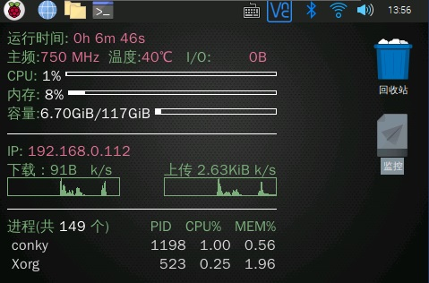

【硬件】树莓派使用入门及配置监测屏幕
条评论Raspberry Pi(中文名为“树莓派”,简写为RPi，(或者RasPi / RPI)是为学习计算机编程教育而设计)，只有信用卡大小的微型电脑，其系统基于Linux。随着Windows 10 IoT的发布，我们也将可以用上运行Windows的树莓派。
自问世以来，受众多计算机发烧友和创客的追捧，曾经一“派”难求。别看其外表“娇小”，内“心”却很强大，视频、音频等功能通通皆有，可谓是“麻雀虽小，五脏俱全”。
相关信息参考：百度百科
一、硬件
本次购买的硬件包括树莓派4b，微雪3.5寸显示屏，外壳，其使用目的是搭建个人服务器及NAS系统。因此使用3.5寸屏幕作为这些服务的监控屏。
在安装屏幕时注意，需要先将屏幕安装到外壳中，然后对准树莓派的gpio接口接入，若拼接顺序出错可能会导致卡壳。
二、安装操作系统
1、本次选用树莓派官方完整版Raspbian镜像，下载地址如下https://www.raspberrypi.org/downloads/。选择完整版系统进行下载。
2、使用ImageWriter磁盘镜像工具将镜像写入到sd卡，可以考虑在烧录完镜像后更改树莓派的配置文件使其能主动接入wifi。（如外接屏幕可忽略该步骤）
3、将sd卡插入树莓派中即可完成操作系统的安装。
4、配置中文系统。使用如下命令安装字体：
1 | sudo apt-get install ttf-wqy-zenhei |
设置中文
1 | sudo raspi-config |
按方向选择【localisation options】，选择【change，locale】，选择【zh _cn 】。按回车键，选择确定，按tab切换到finish。
然后输入命令：
1 | sudo reboot |
重启系统，系统就会变成了中文了。
三、配置3.5寸触摸屏
初次使用树莓派默认利用hdmi接口输出屏幕信号。此时3.5寸屏显示为全白色。购买的屏幕参考资料如下：http://www.waveshare.net/wiki/3.5inch_RPi_LCD_(A)
现在我们来让屏幕工作起来！
1、下载屏幕驱动（提取码：cyyv）
2、将文件放到需要的目录下
3、使用屏幕驱动点亮屏幕
1 | cd LCD-show/ |
4、校准触屏
安装校准软件进行校准，本LCD可以通过xinput-calibrator程序进行校准。运行以下命令，进行安装：
1 | sudo apt-get install xinput-calibrator |
点击任务栏的Menu键，选择【首选项-> Calibrate Touchscreen】。按显示提示进行触摸校准。
如果要保存这些触摸值，需要在以下路径新建一个99-calibration.conf文件(如果已存在则不需要新建)
1 | /etc/X11/xorg.conf.d/99-calibration.conf |
将触摸参数（不同LCD，下图数据可能不同）保存至99-calibration.conf，即可。
有时需要修改该文件中的该值调整触摸方向。
1 | Option "swapAxes" "0" |

5、切换输出模式
有时我们需要使用hdmi对信号进行输出。将树莓派当电脑使用，我们可以使用如下命令切换屏幕输出方式：
1 | cd LCD-show/ |
四、使用VNC进行远程连接
为了方便操作，有时需要使用远程连接来操作树莓派。
在终端输入以下命令进入配置界面。
1 | sudo raspi-config |
依次操作：Interfacing Options -> VNC -> Yes。之后系统会提示你是否要安装 VNC 服务，输入 y 之后回车，等待系统自动下载安装完成，一切顺利的话 VNC 服务就启动了！
五、使用conky监视系统状态
为了能够使用3.5寸触摸屏监控系统状态，这里推荐使用conky来监视系统状态。
1、安装conky
1 | apt-get install conky |
2、运行conky
1 | conky |
运行后发现默认监控界面不适合3.5寸屏幕，因此需要对配置文件按进行修改。
配置文件的位置如下/etc/conky/conky.conf
为充分利用3.5寸屏幕，修改配置后显示如图所示：

其修改后的配置文件如下：
1 | -- vim: ts=4 sw=4 noet ai cindent syntax=lua |